Two ways to make a video
Look at the two frames at the top of this page. One comes from a video that Google labels as generated by its video model. The other comes from a video credited to a creator who worked with code and an AI assistant. You may feel sure which is which. But style is a weak clue: a model can be asked for many looks, and code can display imported photographs. A feeling is not evidence.
This page is a plain-language guide to a research paper about provenance: where a clip came from and how it was made. The paper asks how we could find out how a video was made, and what a watermark could and could not prove. A watermark, or mark for short, is a hidden signal added to a picture or video so that a detector can look for it later. The paper poses questions. It does not report experiments. First, here are the two main ways videos are made today.
Watch the film
One of the example frames further down comes from this 17-minute film by Xiaoyu Li, a co-author of this paper. You can play it right here. The paper does not discuss it, and its description does not say how it was made.
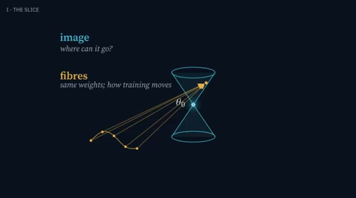
Route A: a model paints the pixels. Many image and video generators are diffusion models1. They start from random noise and remove the noise step by step, guided by a text prompt.
Often the model works on a compressed internal code, and a decoder2 expands that code into the final pixels. The steps in the middle are numbers inside the model, not instructions a person can read.
Route B: code draws the pixels. An AI assistant can instead write code. A separate tool, the renderer, runs that code and draws every frame. For example, Claude Code is an AI coding assistant that edits files and runs commands on a computer. Remotion3 has a tutorial on using Claude Code to build a video project. The renderer then draws frame 0, frame 1, frame 2, and so on, and combines them into a video file. Here the middle step is readable: it is the code.
In this page, a model “paints” (generates) pixels directly, and code “draws” (renders) them through a renderer. After this section we mostly use the technical words, generate and render.
A video can use both. A clip can have a generated background, a chart drawn by code, and a person's own annotations. When an AI agent4 chooses among these tools, the paper calls it a controller. A controller is not a third kind of video. It is the part that decides which tools to use.
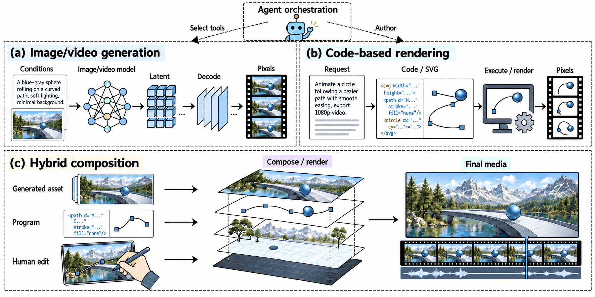
The same chart, made two ways
The easiest place to see the difference is a still picture. Both charts below show the same four invented weekly numbers. The left one was made by an image-generation model. The right one is SVG code5 written by an AI agent and then turned into a picture on our own computer. Both are illustrations for the paper. Neither is a measurement of anything.
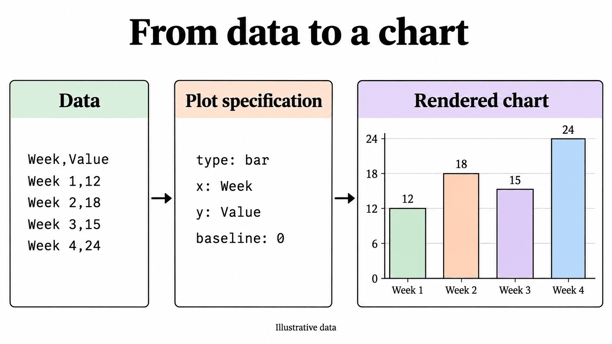
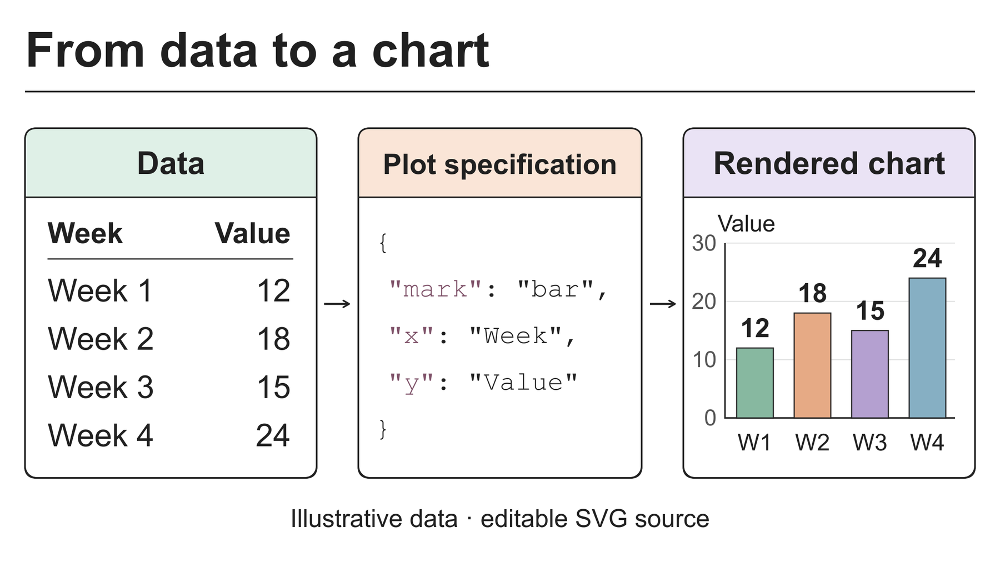
A stranger who found these two pictures would have to guess the route from the style. A guess is not a label.
Real examples
Below are frames from real videos. Each caption names the source and says what that source itself reports about how the video was made. We took the labels from the sources, never from how a frame looks. These are screenshots of existing videos, shown only for illustration. We did not run any test on them.
Labelled as generated by a video model
Google's documentation labels these frames as outputs of its Veo 3.1 video model.
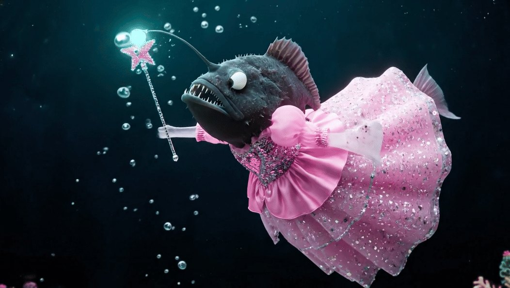
Credited to code-based workflows, or with no method stated
Each frame here is either credited to a video rendered from code or carries the label “Production method not stated”. The credits come from the creators, or from the official Remotion gallery. Some of these videos also use imported images or 3D models. For the “still loading” frame, the credit comes from the creator's own report (he is a co-author of this paper), not from the public page.
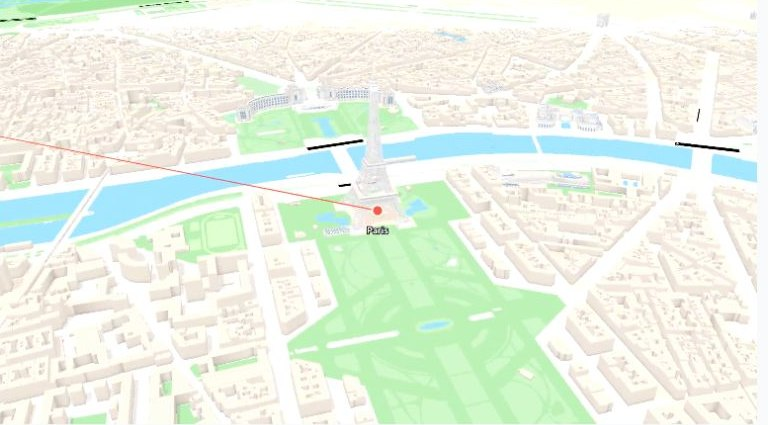
Key ideas
- A model can paint a video, code can draw one, and one video can use both.
- A finished video file often does not carry how it was made: not the prompt, not the code, not the model's hidden data.
- Labels here come from sources, not from appearance. Style alone does not show which route was used.
Three questions: guess, mark, authenticate
Imagine a friend sends you a video clip and asks, “Is this made by AI?” That one question contains three different questions. Each needs different evidence, and confusing them is the easiest way to claim too much.
1. Guess: does it look machine-made?
A detector studies the video and estimates how it was made. Nobody arranged anything beforehand, so the paper calls this passive inference (it also uses “detection” more loosely, for this and for finding a mark). Think of a detective judging a painting by the way it was painted.
Where the comparison breaks: a detective can point to clues and explain them. A detector may give a verdict learned from example videos6, and it can be wrong. The benchmarks we read do not settle whether a detector trained on videos from video models says anything reliable about a video drawn by code.
2. Mark: is a hidden signal in it?
Here someone adds a hidden mark that people do not notice: the creator, or the provider of the tool. Later a detector checks for it and may read a short hidden message. That is a watermark. Think of an invisible-ink stamp checked under ultraviolet light.
Where the comparison breaks: a stamp stays on the paper. A digital mark can be put in at different steps, and later edits can damage it. A detector also needs the right tool or key. And finding nothing does not show that no AI was involved. The clip may come from a tool that never marks, or the mark may have been lost.
3. Authenticate: does a signed record support it?
Here a trusted issuer, such as the company that provides a tool, signs a record that says, for example, “this file came out of our tool.” A digital signature lets anyone check who signed, and a later change to the signed data breaks the check. A standard called C2PA7 describes how such records work. Checking such a record is called authentication. Think of a receipt stamped by an official notary (a person who officially confirms a document).
Where the comparison breaks: a receipt says what the notary saw. Even a valid signature backs only the statement itself. It does not show that the scene is real or that nothing was added later. And a receipt can become separated from the file it describes.
Two small examples from the paper
- A trusted rendering service marks a video that was made from code a person wrote. The mark could support the claim that the service took part. It does not say who wrote the code.
- An animation keeps a mark that came from one generated texture (a picture wrapped onto a 3D surface), while most of the scene was authored separately. The mark applies to that texture only.
These examples do not make the evidence useless. They show that a result must always be reported together with the exact test that produced it. A mark is still useful evidence, but what it says depends on what was tested and who had what. A good system should also be allowed to answer “can't tell.”
Key ideas
- Guessing, marking and authenticating answer three different questions.
- Not finding a mark does not show that no AI was involved.
- Finding a mark does not show that the scene is true or that the history is complete.
What does the checker receive?
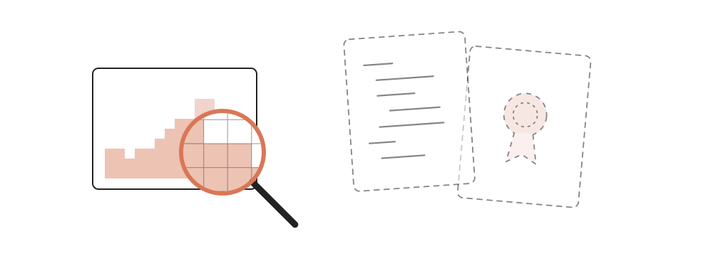
Imagine you are the checker. In this page, the checker is whoever or whatever examines a clip: a person, or software such as a detector. A clip arrives and you must say something about where it came from. What do you actually have?
Usually it is just the video: a grid of coloured dots, called pixels, for every frame. Sometimes the creator also provides the code. Sometimes there is a signed record. What you can honestly conclude depends on which you have.
Choose what the checker has
Each option below adds just one item to the video. The options are not stacked on top of each other.
What you can say. A matching watermark detector can test whether a mark that was added to these finished frames is present. A detector that guesses how the clip was made can also give an answer, but its guess may be wrong.
What you still cannot say with certainty. Which steps made the clip (the paper treats this as an open question), who wrote any code behind it, or that no AI was involved. Two different pieces of code can draw exactly the same pixels.
What you can say. You can read the code and its comments. You can test for a mark that lives in the code, such as a hidden message in a comment.
What you still cannot say. That this code produced this exact video file, or, without a mark made for the purpose, who wrote it. A saved copy of the code does not show which settings were used for the file you have.
What you can say. If the signature is valid and you trust the issuer, you can say what the record states. For example: this file was exported by that tool.
What you still cannot say. That the scene is true, who wrote each part, or what happened outside the record. Converting a file or taking a screenshot can also strip the record away.
The same idea as a grid
Each row is a claim someone might want to make. Each column is what the checker has. This grid is our own plain-language summary of Sections 2, 3 and 5 of the paper. The paper has no such table and does not rate evidence by strength. The shading shows how far each kind of evidence can go. No cell is unconditional: even the best case depends on a stated condition.
- Only if a stated condition holds
- Cannot establish by itself
Same picture, different code
Here is the smallest case where information disappears while rendering. Below is a tiny SVG drawing with a comment, a note for human readers. Suppose the creator hides one bit of a message there, 0 or 1. The renderer ignores comments. Below are three versions of the drawing, one after another; with scripts on, they appear as three tabs you can click.
<svg viewBox="0 0 160 100"> <!-- message: 0 --> <rect width="160" height="100" fill="#f6f6f3"/> <circle cx="80" cy="50" r="28" fill="#d97757"/> </svg>
The comment says 0. Someone who receives this file can read the 0. Someone who receives only the picture cannot.
<svg viewBox="0 0 160 100"> <!-- message: 1 --> <rect width="160" height="100" fill="#f6f6f3"/> <circle cx="80" cy="50" r="28" fill="#d97757"/> </svg>
The comment now says 1, and the drawn picture is identical. If 0 and 1 were equally likely and nothing else gave the message away, a checker who sees only the picture can do no better than guess.
<svg viewBox="0 0 160 100"> <!-- message: 0 --> <rect width="160" height="100" fill="#f6f6f3"/> <circle cx="80" cy="50" r="32" fill="#d97757"/> </svg>
Now the circle is a little bigger. This change is in the picture. A checker who knows the original radius, or the rule that links radius to message, could notice it. A checker who sees only the picture and has no such reference could not tell a mark from the design. A mark like this also changes what a viewer sees, and for a chart it must not change what the chart says.
Look at the second version again. A checker who sees only the picture can only guess8. That follows from the pictures being identical, not from anything special about circles.
Two limits show what this example does not claim. First, it depends on a renderer that ignores comments. Some renderers read comments or names, and a number in the code can turn into motion on screen. So the real question is never “is it code?” It is “does the change reach the pixels?” Second, it says nothing general about watermarks. Source-code marks exist, and so do marks in 3D assets that are designed to stay detectable in rendered images. The point is narrow: rendering can erase some differences and keep others.
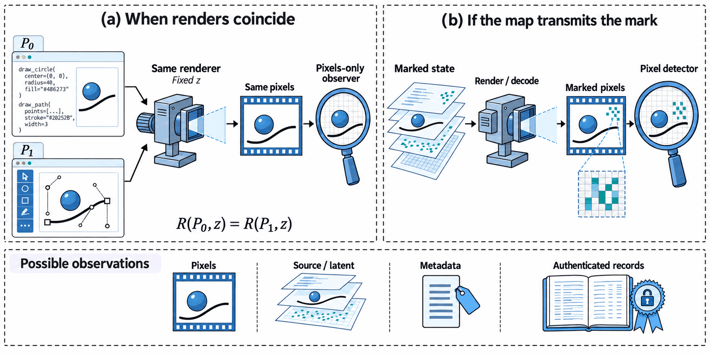
In plain words
Before asking “does the mark survive?”, ask “what does the checker receive?” More evidence helps only when you know exactly what it shows.
Where could a watermark go?
Suppose you run a video company and want every clip to carry a hidden mark. Where would you put it? There are more places than you might expect.
Each route below is a list of steps. For each step, a panel shows what you could mark there, what can remove or limit the mark, and who needs access. With scripts on, you click a step to open its panel. The “what you could mark” lists follow Section 3 and the table of candidate locations (Table 2, Appendix D) of the paper. The “what can remove or limit it” and “who needs access” lines are our plain-language reading of Sections 3 and 5, not results from the paper. Where the paper names no published method for a stage, we say so. The lists show where a mark could sit, not that any product does this.
Method names are examples of published work, and each is linked under Read further. If you would rather start from a concrete example, section 5 shows the real path that Route B can follow.
Route A: a model paints the pixels
- What you could mark here
- Text that goes into the model, or text a language model writes for it. The paper's table lists “conditions or generated textual content” at this stage. It lists this as a location only and names no method for it.
- What can remove or limit it
- Rewriting the text. The finished clip does not carry the prompt, so a checker who has only the clip cannot check it.
- Who needs access
- Whoever controls the request: the person, the AI agent, or the service they use.
- What you could mark here
- A pattern in the noise the generator starts from. Tree-Ring hides one there for images, and VideoShield does something similar for video. Other methods choose the noise to match a secret message.
- What can remove or limit it
- It is hard to read back: reading the mark means running the model in reverse. This is called inversion: working backwards from a finished picture to estimate the noise. A checker needs the model and often a key. Whether the mark survives edits depends on the method.
- Who needs access
- The provider of the generator, to mark. A checker with the model and the key, to read.
- What you could mark here
- Fine-tune the decoder (train it a little more for a new goal) so that its outputs carry a mark. Another option is to shift some of the model's settings using a key. Stable Signature does this for images, and LVMark and Video Signature aim at video.
- What can remove or limit it
- It covers only what this one model makes. Whether the mark survives edits depends on the method.
- Who needs access
- Whoever builds or fine-tunes the model. A checker needs a matching trained detector to read the mark, and sometimes a key.
- What you could mark here
- A tiny pattern added to the finished frames by a trained model, called an embedder. Video Seal does this for video, and HiDDeN and TrustMark do it for images.
- What can remove or limit it
- Edits to the received pixels: compressing again, cropping, filming a screen. Each method is tested against its own list of edits.
- Who needs access
- Anyone with the finished file and an embedder can add one. Whether the mark means anything depends on who holds the key. The step can be applied whether a model, a renderer or a camera made the video.
- What you could mark here
- A signed record (for example a Content Credential) attached to the file, or a record kept by the service.
- What can remove or limit it
- Converting the file or taking a screenshot can strip attached records. A watermark or fingerprint can help find the record again.
- Who needs access
- The issuer holds the signing key. Whoever checks decides whether to trust that issuer.
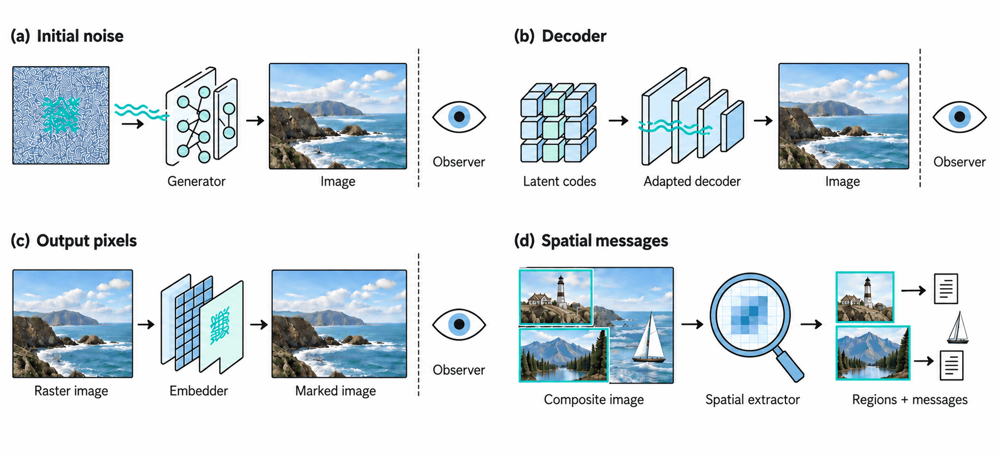
Route B: code draws the pixels
- What you could mark here
- Choices in the code the assistant writes. Some methods (for example SWEET and STONE) nudge which words the model picks while it writes code, so the finished code carries a pattern. Others (for example ACW and SrcMarker) rewrite finished code in small marked ways.
- What can remove or limit it
- Rewriting or reformatting the code. The renderer may also ignore these choices, as in the comment demo above.
- Who needs access
- Whoever holds the code. A checker needs the code and the shared key or detection function.
- What you could mark here
- Small visible details the code controls, such as a line style, a colour or a small change in timing. If the renderer draws them, the message can reach the picture. The paper presents this as an open design problem (questions 2 and 3), not a published method.
- What can remove or limit it
- A clean rewrite of the code, or rounding that removes tiny differences. The task must also stay correct: a chart still has to show the right numbers.
- Who needs access
- Whoever writes or edits the code. A checker with only pixels has to read the message from the picture.
- What you could mark here
- Images and 3D scene data the code loads. Some methods (for example CopyRNeRF and WateRF) mark a learned 3D scene so that views rendered from it carry the mark. These are not methods for ordinary 3D models or textures. Another method (LoT-Pass) marks an image that later feeds an image-to-video model (one that starts from an input image).
- What can remove or limit it
- Swapping in a clean asset, rebuilding the scene, or leaving out the extra step that adds the mark. Rendering the same marked asset again can keep the mark.
- Who needs access
- Whoever makes the asset can mark it. Someone who has clean assets can swap them in.
- What you could mark here
- A managed renderer could add a pixel mark, issue a signed receipt (a signed note of what the renderer did) or attach a credential as it draws the frames. The paper points this out as a possibility. It does not claim that Remotion has such a feature, and we did not check whether it does.
- What can remove or limit it
- Rendering through a different renderer, for example Remotion's client-side rendering in the browser, skips this step. The paper counts that bypass as part of the attacker's powers.
- Who needs access
- Whoever runs the renderer: a server, a browser or the cloud (see section 5).
- What you could mark here
- The same pixel-stage mark as in Route A. Both routes share this option. This option tells you about the marking event, not about which route made the unmarked clip.
- What can remove or limit it
- Edits to the exported file. Also, a fresh render from clean code skips the mark entirely.
- Who needs access
- Anyone with the file and an embedder can add it. Whoever has clean code and assets can skip it by rendering again.
- What you could mark here
- A signed record, a Content Credential, or a receipt from the renderer (a signed note of what it did).
- What can remove or limit it
- As in Route A, conversion or a screenshot can strip a record. A receipt also covers only one step. If the rendering was split across cloud pieces, connecting the receipt to the final file needs extra steps.
- Who needs access
- Whoever operates the renderer and holds its signing key. A receipt can say a renderer processed this file under stated conditions. It does not say who wrote the code.
The last two steps are the same for both routes. A mark added to finished pixels can be applied to a model's video, to a code-rendered video, or to a camera's. What differs is everything before it. These steps are different places to put a mark. They are not ranked from weak to strong. Several can be used at once, and a checker may not know which step was marked.
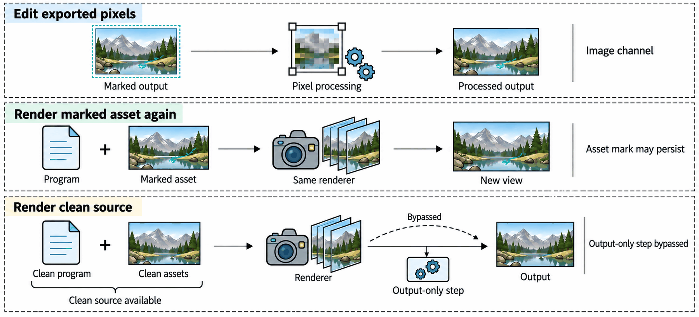
In plain words
Marks can go in many places. Each place has its own checker, its own access needs and its own ways to be lost. No place is simply the best.
How today's tools make code-made video
A creator types a request: “make a ranking video of the best-selling games, in a 3D scene.” Here is the documented path that request can follow, as the official documents describe it. We read the documents and the public code (a pinned snapshot of Remotion's open-source repository: one fixed commit, accessed 4 October 2026). We did not run any of it.
- You describe the video in words. For example, a ranking of the best-selling games, shown in a 3D scene.
- Claude Code writes the code. Claude Code is an AI coding assistant that edits files and runs commands. It works inside a Remotion project folder. Remotion's tutorial lists Claude Code among its supported coding agents and walks through creating the project, installing agent “skills” (add-on instruction packages) and starting a live preview (a window that shows the video while you edit).
- Claude Code produces code. It says what to draw at each frame number.
- A renderer runs the code, frame by frame. In server-side rendering, the renderer packages the project and picks a scene, which Remotion calls a composition. It then computes each frame, captures it, and compresses the frames into a video file.
- The video file is exported.
So the assistant supplies the code, and a separate renderer draws the video. Remotion's documents also show a second way of working: a language model returns code as text, which is then compiled and rendered. That example uses a provider other than Anthropic.
Look at what the creator says. The code, the imported images and the 3D background have different origins. Who wrote the code, where each asset came from, and which renderer drew the final frames are three separate questions.
Where the code runs decides who holds what
The same code can run in three places. Each changes who can see the code, the logs and any secret keys. None of them changes who wrote the code.
- On a server. Remotion calls this server-side rendering. The operator (whoever runs the renderer) has the source files, the settings and the logs. Checkers who only have the video file get just the finished video. A stored copy of the code alone does not show which settings made a given file.
- In the browser. Remotion's client-side rendering runs inside the browser. It skips the server packaging step and supports only a subset of HTML. The paper infers that a preview that works may not guarantee a working export. Whoever runs the page can see its code. A secret key kept in that code is not secret from them.
- In the cloud. Remotion Lambda9 deploys the project to cloud storage, renders pieces in parallel and joins them. A record from one piece covers only that piece. Connecting it to the final file needs extra steps.
What marks and credentials exist today
Anthropic's help page (How Claude marks AI-generated content) describes two things: watermarks that some supported models add to the text they write, and C2PA credentials that some supported file types get. Which models and files are covered depends on the page; we did not test any of them. The page also says a positive detection result is evidence, not full proof. It adds that converting a file or taking a screenshot can remove metadata, the extra information stored inside a file.
Code is text, but a finished video is pixels. As the comment demo in section 3 showed, a mark in text does not automatically reach the pixels. None of the documents we read says that a mark in Claude's text is still present in a rendered video. This does not mean it is impossible. It only means we have no source that says it is present.
C2PA credentials are signed records tied to a file. If the attached data is lost, a watermark or fingerprint (a short summary computed from the content) can help find the right record again. C2PA calls this soft binding10. Soft binding helps find records, but it does not replace the signature.
Still pictures also have two routes
Chat assistants can draw still pictures in more than one way too, and a picture you receive may not say which. Claude's custom visuals feature builds diagrams and charts as web code, with SVG or HTML downloads. OpenAI documents both Code Interpreter, which runs Python and can make graph images, and a separate image-generation tool. The Claude Artifacts help page we consulted lists some export formats, and we found no general promise of MP4 export on it.
In plain words
Today's documented path is simple: you ask, an assistant writes code, a renderer draws the frames. The code is a readable set of instructions, but often only the operator has it, not the checker.
Mixed videos: many sources in one frame
The frame below comes from a music video called “still loading”. Its creator, Zheng Gao, is a co-author of this paper. He reports that the video was rendered by code written with Claude's help; we have not checked this independently, and the public Bilibili page does not say how it was made. The scene inside looks like a detailed illustration. So where did that scene come from? The sources do not say.
This can happen: a video drawn by code can still contain things the code did not create. Examples are pictures, 3D models, voices, or footage from elsewhere. Remotion's Prompt to Video template is a documented case. It combines a generated script, generated images and a generated voiceover, made with OpenAI and ElevenLabs services, into one video. An assistant that can both run code and call an image tool could, in principle, mix the two routes inside one project (the paper treats this as a modelled possibility).
So “model-made” and “code-made” can be too coarse. The paper treats an AI agent as a controller that picks operations. As section 1 said, a controller is not a third kind of video.
A mark on one layer is evidence about that layer only
Picture a lesson video with three layers: a generated background, a chart drawn by code, and a person's circle and arrow. Suppose a detector finds a watermark that belongs to the background. That tells you about the background. It does not tell you who drew the chart, who added the annotations, or whether the lesson is right.
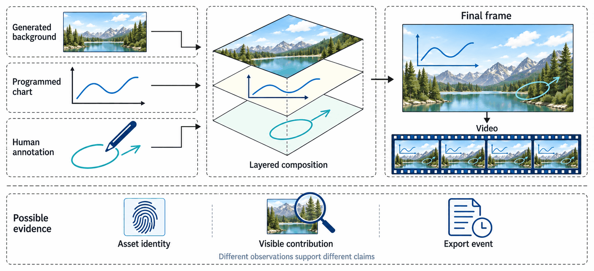
Three traps follow from this.
- Hidden layers. Cropping, covering and transitions can hide the marked layer. A record that an asset was loaded does not prove that it is visible.
- Look-alike patches. The same patch of pixels can come from more than one asset, so some matches may need the answer “can't tell”.
- Copying. An asset can be reused or copied from elsewhere (in the paper's model, reuse is allowed). A match shows that a region corresponds to the asset. It does not show who used the asset, or when.
One 2026 preprint, TRACE (Gao et al.; its first author, Zheng Gao, is also this paper's first author), takes a different approach. It proposes marking an agent's log of actions instead of the pixels. A mark in the log is evidence about the log, and a checker who has only the clip does not have the log.
In plain words
In a mixed video, a mark on one part is evidence about that part only. Say which layer, and which claim, the evidence is about.
Before anyone says “robust”: seven things to pin down
Someone tells you their watermark is “robust”, which means the mark can still be read after edits. Robust against what? For whom? To support which claim? Without answers, the word means very little.
The paper asks for seven things to be written down before any comparison (Sections 1.3 and 2.2 of the paper). It calls the full set a verification specification. Here they are as plain questions. The small circled letter beside each is the symbol the paper uses.
How was the video made?
List the steps: inputs, tools, settings, and any randomness. If an AI agent is involved, say how its choices are limited.
What may the party that adds the mark see and change?
That party might see only the finished pixels, or the code, or a model's inner state. What they can access decides what they can mark.
What does the checker receive?
Only pixels? Also the code, a record, or a key? You saw in section 3 that this changes what can be concluded.
What can an attacker see and do?
Someone with only pixels can edit the file. Someone with the code can also rebuild it and render it again. These are different powers.
What must stay true?
The task the video does (the paper calls this task preservation). A chart must keep its numbers and labels. A lesson must keep its order of events. Looking similar is not enough.
What exactly is being claimed?
“A mark is present.” “This layer came from that asset.” “This tool exported this file.” Each needs different evidence.
What does an unmarked video look like?
You need a baseline to measure false alarms: how often a detector says “marked” about a clip that was never marked.
The paper's full specification also fixes how keys are generated, who may ask the issuer to sign things, and who may run the checker. We leave those out here to keep the list short. The benefit is simple. A test that uses only pixels, a test that reads a message from the code, and a signed export record each depend on different assumptions. If any of the seven things changes, you are no longer comparing the same thing. A good setup also lets the checker say “can't tell”.
In plain words
Before you compare two watermarks, check that the same seven things are fixed. Otherwise you are comparing the setups, not the watermarks.
Ten open questions
Imagine a short animation in which bars grow to their final heights, like the bar chart in Figure 2. The numbers and labels must stay right. (The paper's own worked example is smaller: one bar over five frames.) How much else about that animation could a creator change to carry a hidden message, and what would survive editing?
Section 6 of the paper poses ten questions of this kind. The paper does not answer them, and it does not claim that every version of them is unsolved everywhere. Each is written as a small, carefully limited problem with a small starting case where one can check the basic definitions. Below, each one is restated in plain words, with why it matters and a sensible first step. The full versions, with exact conditions, are in the paper. Many of them use the bar animation as a running example: its values and labels must stay correct, so the task limits what may be changed. The four themes in the filter are our own grouping for browsing, not the paper's sections.
1Can the route that made a clip be told apart, under stated conditions?
In plain words: take clips of the same kinds of scenes, each made wholly by one route (mixed videos are treated separately). Is there a simple rule for when a test can beat guessing, and when it cannot, as the scenes and the choices of code vary? The test may answer “can't tell” only up to a stated limit. The checker may also be given extra information from a fixed menu, each item with a stated cost in trust or disclosure, but never a free, trusted label of the route.
Why it matters: two different pieces of code can give identical pixels. The chance of picking each one may differ between routes, so look-alike clips do not settle the question either way.
A sensible first step: start with very small artificial examples where the best possible test can be computed exactly, and let the test say “can't tell”.
2Which hidden changes are still there after rendering?
In plain words: pick small changes that keep what a scene is for. After rendering, frame sampling and editing, can a checker who has the pixels and a key, but not the original clean video or the scene's coordinates, still tell them apart?
Why it matters: a change that leaves the picture identical gives the checker nothing to find.
A sensible first step: in the bar animation, vary the bars' timing slightly. Ask how many different timings can still be told apart as the video is sampled less often (fewer frames per second).
3From drawing instructions to a picture
In plain words: take a simple drawing language. Which line, colour or timing details can carry a message all the way to the exported picture (the raster image)? Assume the checker does not know which renderer or settings were used.
Why it matters: a mark in the source is not automatically a mark in the picture.
A sensible first step: fix a tiny set of drawing rules and search for one method that works across several renderers, or find a case where none can.
4A fair comparison of places to mark
In plain words: compare marking at each stage the paper lists (the noise or decoder, the code, the assets, the renderer and export, and the finished pixels) under the same task, attacker and checker. When can one place do as well as another?
Why it matters: otherwise “A beats B” may only mean A had more access.
A sensible first step: fix the hidden message size, error rate and false-alarm rate. Then ask whether a pixel mark can imitate an upstream mark (one placed at an earlier step).
5How much can we hide?
In plain words: in the bar animation, how many message bits can survive while the chart stays correct? How does that change with frame count, rounding and edits?
Why it matters: the room the task leaves, not merely the number of possible videos, limits what can hide.
A sensible first step: start with zero errors allowed, where different messages must give different possible videos even after the permitted edits.
6What can someone with the code undo?
In plain words: suppose an attacker can rebuild the video from a marked image or 3D model from an earlier step. How much access and effort does it take to push the average chance of reading the message down to a stated level while the video still does its task?
Why it matters: rendering a marked asset again, swapping in a clean one and rebuilding the code are different powers.
A sensible first step: let the attacker change at most a few timing numbers in a small set of rules, and look for a bound.
7Finding the position in an edited clip
In plain words: after cuts, speed changes or dropped frames, how much of the clip do you need to read the message and know where you are? You must not produce false results by trying many alignments.
Why it matters: reporting the best of many tries inflates false alarms unless the whole search is counted. A repeating pattern alone can leave the absolute position unknowable, though the clip's length or boundaries may still give it away.
A sensible first step: allow one deletion at an unknown spot, with no blending.
8Edits on top of edits
In plain words: a mark survives one allowed edit, then another. Can we state simple, checkable conditions under which the message and the false-alarm guarantees still hold after the pair, without checking every sequence? A counterexample would also be an answer.
Why it matters: each cut may remove up to a quarter of what it receives. Start with 64 frames: the first cut removes 16, and the second removes 12 of the 48 left. Together they remove 28 of 64, more than a quarter of the original.
A sensible first step: allow a few frame insertions, deletions and replacements, then one spatial change. Measure the total change compared with the original clip.
9Is this asset still visible in the video?
In plain words: a layered video uses an original asset, such as an image or 3D model. Suppose the checker has the asset and a record of how the layers were masked (the layout). When can it show the asset is still visible in a frame, keeping both kinds of mistake (missing it, and wrongly claiming it) under control?
Why it matters: layers can be hidden, look-alike patches can come from several assets, and a match does not show who used the asset or when.
A sensible first step: two solid layers, nothing transparent, and no compression. Then add edits.
10Records that support an event without revealing extra information
In plain words: take one trusted issuer. Can a record let a checker accept authorised copies of its output almost always, and wrongly accept anything else only rarely? And can it do this while revealing nothing beyond what the file shows, plus the public information the setup declares, such as the issuer, the kind of event and the verification result? The keys are assumed to stay uncompromised.
Why it matters: hiding a message is not privacy, and a genuine asset credential does not confirm a new export.
A sensible first step: compare a signature on the exact file, a credential kept apart from the file, and a signed record found again through soft binding. Ask when a watermark inside the video actually helps.
In plain words
The ten questions share one idea: say exactly what is changed, what the checker sees, and what is being claimed. Then ask what is possible.
What this page is and is not
Before you take anything from this page, here is exactly what it is.
Screenshots show how their sources label them. They are not evidence that any watermark or detector works.
What it is
- A plain-language guide to a conceptual research agenda. The paper sets out definitions, a few small worked examples, and ten questions.
- Built on published methods, official documents and public code that we read. Official documents were checked on 4 October 2026 and example pages on 5 and 6 October, and tools change.
- A working draft. It is not offered as a finished or publication-ready result.
What it is not
- Not an experiment. We measured nothing. We did not test any watermark, detector or credential on any example on this page, and there are no scores.
- Not a tool. This page implements no detector.
- Not a claim that these ideas are new. We did not run a novelty check. The paper does not claim that every version of its ten questions is unsolved in every setting.
- Not new theorems. The paper's short mathematical examples are elementary. They explain where information is lost or kept, how hidden changes must pass through rendering, and how searching many alignments affects false alarms. It claims no new theorems.
- Not every source was read in full. The paper's reference list has 80 entries: papers, official documents, specifications, code repositories and creator posts. Reading depth varied. Some central methods were read in technical detail. Several newer ones were only screened from their abstracts. Our source notes record which is which.
- Not a comparison of the two routes. The example frames show variety. They do not show that one route looks better, and we do not claim the two routes give identical pixels.
About the pictures
The video frames are screenshots or decoded frames of existing videos, used here to illustrate. One was supplied by the paper's author. Each caption gives the credit and what the source says about how the video was made. The five concept figures, and the left chart in Figure 2, were made with an image model for the paper. They explain ideas. They are not results and not proofs. One frame has a small retouched area, which its caption describes.
In plain words
This page explains a set of good questions. It does not answer them, and it makes no claim about how well any watermark works.
Words used here
- Watermark
- A hidden mark added to a picture, video or text so that a detector can find it later. It may also carry a short message. “Mark” is short for watermark.
- Provenance
- The history of where something came from: who or what made it, with which tools and inputs, and what happened to it afterwards.
- LLM
- Large language model: the kind of AI behind chat assistants.
- Checker
- Any person or software that examines a clip to say something about how it was made. What it can conclude depends on what it receives: pixels, code, keys or records.
- Detector
- A checker that looks for a mark or estimates how a clip was made. It can be wrong.
- Passive inference (passive detection)
- Guessing how a clip was made from the clip alone. Nobody arranged a mark beforehand, so the answer is an estimate and can be wrong.
- Authentication
- Checking a signed record from an issuer, such as “this file came out of our tool”, under stated trust assumptions.
- Signed record
- A statement protected by a digital signature, so that changes to it can be detected.
- Issuer
- The person or organisation that signs a record, such as the provider of a tool.
- Key
- A secret value, like a password, used to add a mark or to sign a record. A checker may need the matching key.
- Fingerprint
- A short code computed from the content of a clip. It can help find the matching record without a hidden mark.
- Robust
- A mark is robust if a checker can still read it after allowed edits such as compression or cropping. The paper asks: robust against what?
- Diffusion model
- A generator that starts from random noise and removes it step by step, guided by a prompt, until a picture or video appears.
- Latent
- A compressed internal code that some generators work on before turning it into pixels.
- Decoder
- The part of a generator that turns a latent into pixels.
- Metadata
- Extra information stored inside a file, such as who made it or a signed record. Converting the file can strip it.
- Pixels
- The tiny coloured dots that make up each frame of a picture or video.
- Renderer
- Software that follows a description, such as code or an SVG file, and draws the picture or video frames it describes.
- Rendering
- The act of drawing frames from code or an SVG file. The same code can give different results if the renderer or its settings change.
- Operator
- The person or company that runs a renderer or a service.
- Asset
- An image, 3D model, texture or sound file that code loads and uses when it renders a video.
- SVG
- A text format for drawings. A file lists shapes, colours and text. It can be opened and edited as text, or drawn as a picture.
- Remotion
- A toolkit that makes videos from React code. The code describes what each frame shows, and Remotion renders it.
- Claude Code
- An AI coding assistant from Anthropic that can edit files and run commands in a project. Remotion documents how to use it for video projects.
- AI agent (controller)
- Software, often guided by a language model, that picks tools and runs them. The paper calls it a controller when it chooses among ways of making media.
- C2PA and Content Credentials
- A standard for signed records about how a piece of media was made or handled. Content Credentials is the common name for such records.
- Soft binding
- Using a watermark or fingerprint in the content to find the matching C2PA record again when the metadata has been lost. It does not replace the signature.
- Hybrid media
- A video or image built from several sources, such as generated assets, code-drawn parts and human edits.
- Task preservation
- Keeping what the video is for. A chart keeps its right numbers and labels. It need not keep every pixel the same.
- False alarm
- A detector saying “marked” about a clip that was never marked.
- Attacker
- Anyone who tries to remove, fake or avoid a mark. What an attacker can see and change, such as only pixels or also the source, is part of the setup.
- Can't tell (abstain)
- To answer “can't tell” instead of yes or no. A good checker is allowed to do this.
Read further
Twenty-five primary sources from the paper's reference list. Each link goes to the source itself: a paper, a standard, or official documentation. Years are the first public (arXiv) year unless a venue is named.
Watermarks for images and video
- Video Seal: Open and Efficient Video Watermarking A watermark added to finished video frames, which its authors designed to withstand common video edits (we did not test this).
- VideoShield: Regulating Diffusion-based Video Generation Models via Watermarking A mark placed in the starting noise of a video generator.
- The Stable Signature: Rooting Watermarks in Latent Diffusion Models Changes an image generator's decoder so that the pictures it makes carry a hidden mark.
- Tree-Ring Watermarks: Fingerprints for Diffusion Images that are Invisible and Robust Hides a pattern in the noise an image generator starts from.
- Watermark Anything with Localized Messages Reads separate messages from different regions of one image.
- VideoMark: A Distortion-Free Robust Watermarking Framework for Video Diffusion Models A video-generation mark that matches frames in time so that it can still be read after edits.
- HiDDeN: Hiding Data With Deep Networks A neural network trained to hide a message in an image and to read it back.
- TrustMark: Universal Watermarking for Arbitrary Resolution Images A watermark added to finished images of any size.
- LVMark: Robust Watermark for Latent Video Diffusion Models A watermark for video generators that work on a compressed internal code.
- Video Signature: Implicit Watermarking for Video Diffusion Models A watermark built into a video generator itself, so that its videos carry the mark.
- LoT-Pass: Long-term-robust Image Watermarking for Image to Video Generation A watermark for an input image that is meant to feed an image-to-video model.
Marks in code and in 3D assets
- SrcMarker: Dual-Channel Source Code Watermarking via Scalable Code Transformations Hides a message in source code by rewriting the code in ways that carry the mark.
- CopyRNeRF: Protecting the CopyRight of Neural Radiance Fields Marks a 3D scene so that pictures rendered from it carry the mark.
- Who Wrote this Code? Watermarking for Code Generation (SWEET) Nudges the words a code-writing model picks at hard-to-predict points, so the code carries a pattern.
- Marking Code Without Breaking It (STONE) Chooses where to mark by the kind of code syntax, so that the marking does not break the code.
- Resilient Watermarking for AI-Generated Codes (ACW) Rewrites finished code with changes such as refactoring and reordering to carry a mark.
- WateRF: Robust Watermarks in Radiance Fields for Protection of Copyrights Marks a learned 3D scene so that views drawn from it carry the mark.
Tools and workflows
- Claude Code overview What Claude Code is and what it can do on a computer.
- Prompting videos with coding agents The tutorial for making a Remotion video with a coding agent.
- Client-side rendering Rendering a video inside the browser instead of on a server.
- How Claude marks AI-generated content What marks and credentials Claude's supported models and files carry.
Provenance, detection and limits
- Content Credentials: C2PA Technical Specification, version 2.2 The standard for signed records about media, including soft binding.
- PROV-DM: The PROV Data Model A standard vocabulary for who and what took part in making something.
- GenVidBench: A 6-Million Benchmark for AI-Generated Video Detection A test set for detectors that guess whether a video was machine-generated.
- TRACE: A Two-Channel Robust Attribution Watermark via Complementary Embeddings for LLM-Agent Trajectories A watermark placed in an agent's log of actions instead of in the pixels.
Credits
Example frames
All frames are screenshots or decoded frames, shown to illustrate. We claim nothing about them beyond what each source says. Labels follow the sources and not how a frame looks. X may ask you to log in to open the X links below.
- Veo frames. Google AI for Developers, “Generate videos with Veo 3.1 in Gemini API” (page last updated 2026-09-17 UTC). The paraglider frame was captured on 5 October 2026. The other three were captured on 6 October 2026 from the page's animated previews, at an arbitrary point in each loop. The page labels each output as generated by Veo 3.1. Some of these clips start from input images that the page itself labels as generated by Nano Banana, so they are not plain text-to-video examples. The page says its content is licensed under CC BY 4.0 except as otherwise noted; it does not say whether the preview clips are covered. Each frame is a single still with black edge columns trimmed, and nothing else was changed. Source.
- Game-ranking frame. Dilum Sanjaya (@DilumSanjaya), via the official Remotion gallery entry, which credits him and labels the tool Claude Code. The creator's public thread describes the workflow and the imported assets. Gallery, original post, workflow post, asset post. Frame decoded from the gallery video, scaled to 1280 px wide; captured 5 October 2026. The game titles and sales numbers are the video's own content, not data we used.
- “still loading” frame. Music video by Zheng Gao, a co-author of this paper, posted on Bilibili on 1 October 2026 (account “Elvis的游乐园”, named here only as the source credit). He reports that it was rendered by code written with Claude's help; the public page does not state the workflow. The paper's Figure 4(b) and reference [51] credit the video to him. The origin of the images inside it is not stated. Source. Captured 5 October 2026.
- Retouch disclosure. In the “still loading” frame (01:11), an image model was used to paint over the platform's logo and account-name overlay in the upper-left corner (about 2% of the frame) and to redraw the part of the on-screen progress bar hidden behind it, so those pixels are generated, not original. Everything outside that small area is the original decoded frame. The other frames are not retouched; any trimming or scaling is described in their own credits.
- Film frame (production method not stated). A frame from the YouTube film “A Categorical Atlas of Parameter-Efficient Fine-Tuning: Cones, Orbits, and Gauges”, uploaded by Xiaoyu Li (channel @xiaoyulics, about 6 October 2026). Xiaoyu Li is also a co-author of this paper, but the paper does not discuss this film. The film's description cites a technical report by Xiaoyu Li, Zhizhou Sha, Chiwun Yang and Dai Shi. The film's title card, visible in the player, reads “with Claude Opus 5.5 (Anthropic)”. The description ends with the line “License: CC BY 4.0.”. Neither says how the film was rendered, and we make no claim about that. The frame is a screenshot supplied by the paper's author on 6 October 2026; its time in the film was not recorded. The “Play here” button opens the film in a player on this page, using YouTube's privacy-enhanced embed (youtube-nocookie.com). Nothing is loaded from YouTube until you press it. Source.
- Map-animation frame. The official Remotion gallery entry “Travel Route on Map with 3D Landmarks”, credited to @JNYBGR, with gallery labels Claude Code and Opus 4.5. Those labels belong to that example only. Source.
- Any further frames in the galleries carry their own credit line in the caption.
Illustrations
- On this page, Figures 1, 3, 4, 5 and 6 are conceptual illustrations made with an image model for the paper (Figures 1, 2, 3, 5 and 6 of the PDF). They explain ideas. They are not measurements and show no real detector output.
- In Figure 2 (Figures 4(e) and 4(f) of the PDF), the left chart came from an image-generation model. The right chart is SVG code written by an agent and turned into a picture on our own computer. The data are invented.
- The tiny circle drawings in section 3 are real inline SVG, shown next to their source.
- The small line drawing under the heading of section 3 is a decorative SVG drawing made by hand for this page. It is not a figure from the paper and shows no data.
The paper
“Rethinking Visual Provenance: Detection and Watermarking Across Direct Visual Generation and LLM-Driven Code Rendering”. Authors: Zheng Gao, Xiaoyu Li, Zhicheng Bao, Yang Song and Jiaojiao Jiang, UNSW Sydney. The PDF prints no date; its sources were accessed on 4 and 5 October 2026, and we date this page October 2026. We describe the paper as a conceptual working draft; the paper itself calls it a conceptual research agenda. Read it as a PDF (46 pages, 15.8 MB).